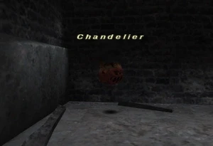

Level 75 reference · Zenith rules
|
Job: Notorious Monster |
 |

|
Zone |
Level |
Drops |
Steal |
Spawns |
Notes | ||||||
|
63 |
1 |
A, S, M | |||||||||
|
HP = Detects Low HP; M = Detects Magic; Sc = Follows by Scent; T(S) = True-sight; T(H) = True-hearing JA = Detects job abilities; WS = Detects weaponskills; Z(D) = Asleep in Daytime; Z(N) = Asleep at Nighttime | |||||||||||
Notes:
- Spawned by Quest: Hitting the Marquisate
- Can be soloed by a 75 NIN/DRK.
- Will use Self-Destruct if it aggros before it is claimed while spawning.
- If it uses Self-Destruct before being claimed, there is no chance it will drop the Chandelier Coal. If it Self-Destructs before it is killed otherwise, there is a very minor chance it will drop.
- Any Stun-usable job is recommended for the fight. (DRK, BLM, BLU, etc)
- Recommended for a thief with Hide ability to spawn the bomb. There is a 2-3 second window after cutscene where Hide can be used. Once hide is used, move a short distance away, and ranged pull the bomb. Doing so may cause the bomb to only use Berserk, however the bomb can hit up to 700 damage melee after that happens. A ninja tank is recommended against the bomb.
- Blind, Stun, Dispel, Elegy, Finale, and Slow will stick.
Adapted from Eden Wiki: Chandelier · Contributors and history · CC BY-SA 4.0. Revision 46813. Layout, links and optional background text adapted for Zenith.